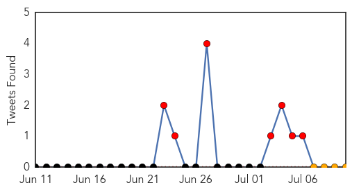

Ebola
30-Day Web Trend
11 alerts, 8 warnings

30-Day Twitter Trend
7 alerts, 0 warnings

Article Locations

Article Confidences

Top Articles:
- 1.000
- Remarkable Ebola recovery rate in north Guinea town puzzles experts
- 1.000
- WHO reports 25 deaths, 50 new cases
- 1.000
- The Facts Behind A Frightening Virus
- 1.000
- Ebola in Africa: Can we dodge a global pandemic?
- 1.000
- Flashcard: Ebola
- 1.000
- Why health officials say the Ebola epidemic won’t spread into Canada
- 1.000
- Deadliest Ebola Outbreak Continues 'Frightening' Spread; Samaritan's Purse Directing Efforts at Liberia Isolation Center
- 0.999
- Superbugs public health epidemics
- 0.999
- Ebola Outbreak: Ghana Tests US Citizen as Precaution
- 0.998
- I survived Ebola, but villagers shunned me
- 0.993
- Provide resources to fight Ebola – Mahama to ECOWAS
- 0.991
- Provide resources to fight Ebola – Mahama to ECOWAS
- 0.990
- Nurses trained to dress up to combat infection « Awoko Newspaper
- 0.989
- American suspected of Ebola infection dies in Ghana
- 0.987
- Local nurse heads to Liberia to battle Ebola virus
- 0.981
- News Scan for Jul 10, 2014
- 0.981
- 28 people survive Ebola in Salone « Awoko Newspaper
- 0.976
- Ebola Treatments Face Testing Hurdles as Hundreds Die
- 0.971
- Ebola Patients Should Not Be Given Experimental Therapies
- 0.961
- worst Ebola outbreak ever
- 0.938
- Ebola scare: Body of American to be flown to USA
- 0.923
- ECOWAS summit opens today
- 0.893
- World travel: News affecting world travel
- 0.715
- ECOWAS Summit opens
Top Tweets:
-
No tweets found for Jul 10, 2014